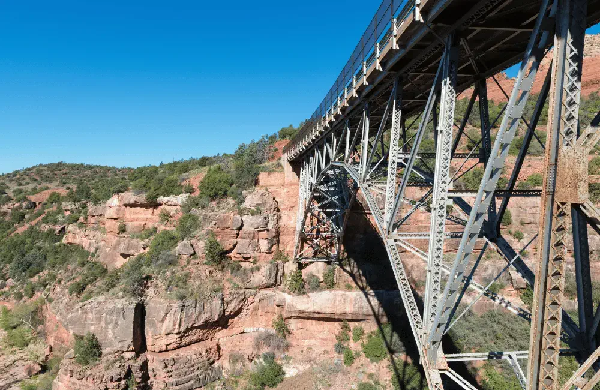
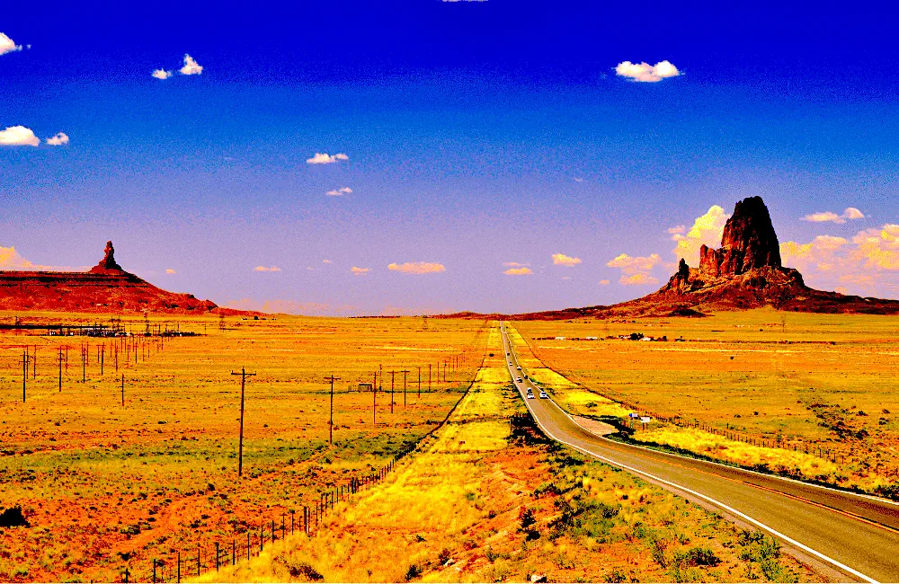
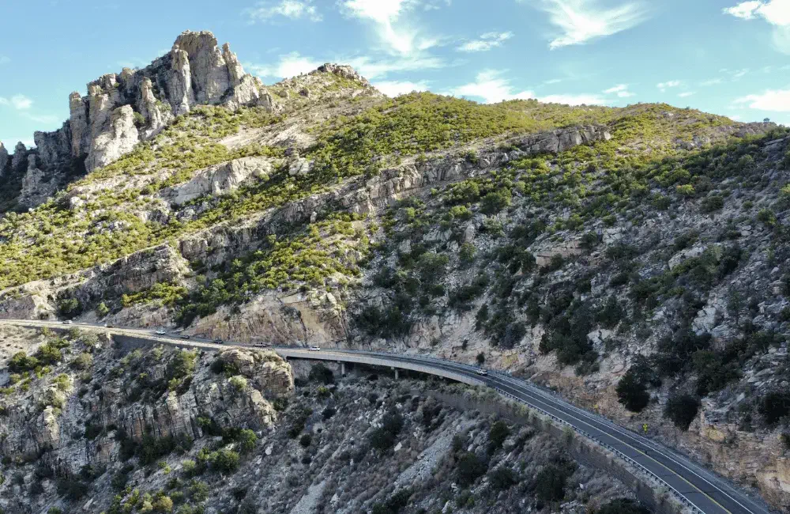

Arizona has some of the most stunning and scenic drives in the United States. From taking in the breathtaking beauty of the Painted Desert to exploring the majestic Grand Canyon, there are many routes to choose from that will take your breath away. When driving through Arizona you can choose to take roads lined with breathtaking red rock formations, traverse mountain passes with expansive views, and wind your way through vast forests and valleys. No matter which route you choose, you will be immersed in the state’s natural beauty and surrounded by its diverse wildlife. The wonders of Arizona await you, so let's hit the road and explore some of the beuaitul drives below.
One of the most beautiful drives in Arizona is the scenic drive from Sedona to Oak Creek Canyon. It truly is an experience that cannot be missed. With its stunning red rock landscapes, desert vistas, and lush greenery, this drive will take your breath away. From the unique formations of the red rocks to the winding roads that guide you through the canyon, this drive is a must-do for anyone visiting the area. Along the way you'll have the opportunity to stop at various viewpoints and take in the breathtaking views of the canyon and its surrounding areas. From the small, picturesque town of Sedona to the rugged beauty of Oak Creek Canyon, this drive will leave you with a lasting impression.
One of the most scenic and photographed roads in the southwest is the 22-mile stretch of U.S. 163 that runs from Kayenta to the Monument Valley turnoff, passes into Utah for a few miles, and then returns to Monument Valley in Arizona. As you drive this stretch of road, you will be surrounded by mesas and ridges as you cross the deep Laguna Creek. Agathla Peak is a large volcanic rock formation that is sacred to the Navajo and will leave you in awe as you travel through the valley.
A scenic drive from Tucson up to Mount Lemmon is truly a one-of-a-kind experience. The winding road leads you through some of the most beautiful, diverse landscapes Arizona has to offer. From the dry desert of Tucson, to the vibrant and lush Sonoran Desert of the Santa Catalina Mountains, you will be taken aback by the beauty. Along the way, you will have the opportunity to take in the stunning views of the valley below, as well as the breathtaking sights of the peak of Mount Lemmon. The drive is well worth the effort and provides an unforgettable adventure.
